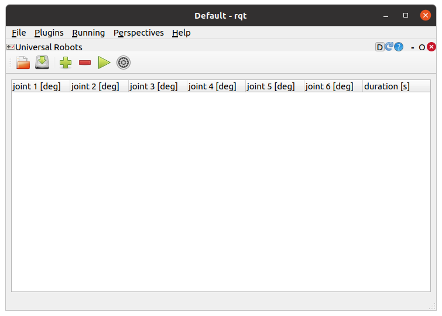
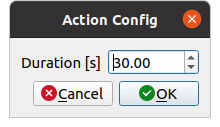

UR(experimental)¶
ここでは、UR(experimental)の使い方を説明します。UR(experimental)は、ユニバーサルロボット社のUR5e に対して各関節の角度を指示するためのrqtの拡張機能です。
UR(experimental)の起動¶
UR(experimental)を起動する手順は次のとおりです。
- メインメニュー「Plugins」-「Robot Tools」-「UR(experimental)」を選択する
各関節の角度の指示¶
各関節の角度を指示する手順は次のとおりです。
- ツールバーの＋ボタンを押してリストに行を追加する、または−ボタンを押してリストから行を削除する
- 追加した行のjoint 1 [deg]〜joint 6 [deg]とduration [s]に任意の数値を入力する
- ツールバーの▶ボタンを押して各関節の角度を指示する
各パラメータは、次のとおりです。
| パラメータ | デフォルト値 | 単位 | 意味 |
|---|---|---|---|
| joint 1~6 | - | deg | 各関節の角度を指定します。joint 1~6は、順にshoulder_pan_joint、shoulder_lift_joint、elbow_joint、wrist_1_joint、wrist_2_joint、wrist_3_jointに対応しています |
| duration | - | s | 現在の姿勢から次の姿勢までの状態遷移の時間を指定します |
▶ボタンを押すと、リストの上から順にUR5eに対して各関節の角度が指示されます。
UR(experimental)の設定¶
UR(experimental)では、以下の設定をすることができます。
| パラメータ | デフォルト値 | 単位 | 意味 |
|---|---|---|---|
| duration | 30 | s | 各関節の角度を指示したときのサーバの待ち時間を指定します |